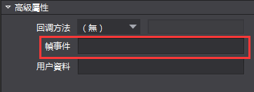
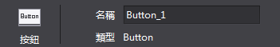
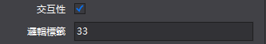
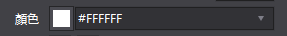
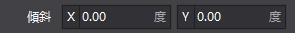
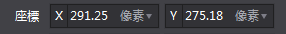

屬性擴展
注意：2.3.3.0版本對屬性區相關介面進行了調整，詳情請見 2.介面變更
1.屬性區擴展
Cocos Studio預置的控制項支援擴展，對於控制項的屬性區同樣支援擴展。一些基本類型的屬性，編輯器中已經包含對應的屬性控制項，只需要按照一定規則即可使用。如果使用者想要擴展自訂屬性，可以根據自己意願製作需要的功能(示例代碼中有詳細介紹)。
Cocos Studio預置控制項
string 類型

幀事件這個屬性是一個string類型，內容是一個可以輸入的文本，不限制文本的輸入格式，可以隨意輸入，可為空。
範例：
string customString = string.Empty;
[UndoPropertyAttribute] //允許撤銷回退，不允許則不添加
[DisplayName("字串")]//Label顯示文本
[Category("Custom_Plug")]//屬於哪個分組
[PropertyOrder(0)]//在分組的排序，例如，1在0之後
[Browsable(true)]//是否顯示當前屬性，不允許則設置為false 或者不添加這個屬性戳
public string CustomString
{
get { return customString; }
set
{
if (customString != value)
{
customString = value;
//如果允許記錄撤銷記錄，則調用屬性通知，如果不需要記錄，則不添加
this.RaisePropertyChanged(() => this.CustomString);
}
}
}

名稱這個屬性是一個string類型，內容是一個可以輸入的文本，不限制文本的輸入格式，可以隨意輸入，但是不能為空，如果為空，恢復上一次保存的值，若要使用這類文字方塊，則要調用ValidTextEditor。
範例：
[UndoPropertyAttribute]
[DisplayName("ValidTextBox")]
[Editor(typeof(ValidTextEditor), typeof(ValidTextEditor))] //這裡的Editor是制定特定的類型控制項，這些控制項屬於自己寫的，非系統原生
[Category("Custom_Plug")]
[PropertyOrder(0)]
[Browsable(true)]
public string ValidTextBoxString { get; set; }
int 類型
邏輯標籤這個屬性是一個int類型，內容是一個可以輸入數位的控制項，限制只能輸入數位，最大限制預設是正負9999999，在程式中可以通過SetMaxMin進行設置。
範例：
int customInt = 0;
[UndoPropertyAttribute]
[DisplayName("整數")]
[Category("Custom_Plug")]
[PropertyOrder(1)]
[Browsable(true)]
public int CustomInt
{
get { return customInt; }
set
{
if (customInt != value)
{
customInt = value;
this.RaisePropertyChanged(() => this.CustomInt);
}
}
}
bool 類型

可見性這個屬性是一個bool類型，類型是一個checkbox，可以進行選擇和不選擇。
範例：
bool customBool = false;
[UndoPropertyAttribute]
[DisplayName("布林")]
[Category("Custom_Extend")]
[PropertyOrder(4)]
[Browsable(true)]
public bool CustomBool
{
get { return customBool; }
set
{
if (customBool != value)
{
customBool = value;
this.RaisePropertyChanged(() => this.CustomBool);
}
}
}
enum 類型
水準對齊這個屬性是一個enum枚舉類型，類型是一個下拉combox，可以選擇不同的枚舉項。
範例：
// 枚舉定義示例，實際使用時請將枚舉的定義放到 ViewModel 類外面，和 ViewModel 平級。
// 參見示例工程中 WeekdayEnum 枚舉的定義。
public enum CocosEnum
{
None,
Fir,
Sec,
Thi
}
CocosEnum customEnum = CocosEnum.None;
[UndoPropertyAttribute]
[DisplayName("枚舉")]
[Category("Custom_Plug")]
[PropertyOrder(5)]
[Browsable(true)]
public CocosEnum CustomEnum
{
get { return customEnum; }
set
{
if (customEnum != value)
{
customEnum = value;
this.RaisePropertyChanged(() => this.CustomEnum);
}
}
}
Color 類型

顏色混合這個屬性是一個Color類型，類型是一個群組控制項，可以選擇不同的顏色。
範例：
System.Drawing.Color customColor = System.Drawing.Color.White;
[UndoPropertyAttribute]
[Editor(typeof(ColorEditor), typeof(ColorEditor))]
[DisplayName("顏色")]
[Category("Custom_Extend")]
[PropertyOrder(6)]
[Browsable(true)]
public System.Drawing.Color CustomColor
{
get { return customColor; }
set
{
if (customColor != value)
{
customColor = value;
this.RaisePropertyChanged(() => this.CustomColor);
}
}
}
ScaleValue 類型

傾斜這個屬性是一個ScaleValue類型，類型是一個群組控制項，可以分別設置X和Y的值，並且可以在屬性中設置最大值最小值和每次滑鼠滾輪幅度。
範例：
ScaleValue customScaleValue = new ScaleValue(1, 1);
[UndoPropertyAttribute]
[Editor(typeof(CustomEditor), typeof(CustomEditor))] // CustomEditor 的原始程式碼可以在示例工程中找到。
[ValueRange(int.MinValue, int.MaxValue, 1)]//ValueRange屬性是設置控制項最大值最小值和幅度
[DisplayName("ScaleValue")]
[Category("Custom_Extend")]
[PropertyOrder(7)]
[Browsable(true)]
public ScaleValue CustomScaleValue
{
get { return customScaleValue; }
set
{
if (customScaleValue != value)
{
customScaleValue = value;
this.RaisePropertyChanged(() => this.CustomScaleValue);
}
}
}
PointF 類型

錨點這個屬性是一個PointF類型，類型是一個群組控制項，可以分別設置XY的值。
範例：
/*PointFEditor和ScaleValueEditor的內容一致，
只是在其中需要類型的強制轉換，Point和ScaleValue兩種強類型，
在控制項內做處理太繁雜，單一原則，把這兩個類型寫成了兩個控制項*/
PointF customPointF = new PointF(1, 1);
[UndoPropertyAttribute]
[Editor(typeof(PointFEditor), typeof(PointFEditor))]
[ValueRange(int.MinValue, int.MaxValue, 1)]//ValueRange屬性是設置控制項最大值最小值和幅度
[DisplayName("ScaleValue")]
[Category("Custom_Extend")]
[PropertyOrder(7)]
[Browsable(true)]
public PointF CustomPointF
{
get { return customPointF; }
set
{
if (customPointF != value)
{
customPointF = value;
this.RaisePropertyChanged(() => this.CustomScaleValue);
}
}
}
CustomObject這個範例檔中，一些已經提供的屬性，使用者添加了這些屬性後，需要在CustomObjectData 類中添加相應的屬性，這樣屬性才能在關閉編輯器後保存起來，下次打開檔讀取之前保存的屬性。
例如：
[ItemProperty]
[JsonProperty]
public int CustomInt { get; set; }
具體的代碼在CustomObjectData已經添加。
編寫一個自訂控制項
CustomEditor是一個可以編輯ScaleValue類型的屬性編輯器，它繼承自BaseEditor，BaseEditor則繼承自IPropertyEditor介面。
BaseEditor中已對IPropertyEditor介面進行了實現，但子類在繼承BaseEditor時，依然需要重寫其中的一些方法，其中必須要重寫的方法如下：
protected abstract Gtk.Widget OnCreateWidget();
protected abstract void void OnSetControl();
Gtk.Widget OnCreateWidget()方法用於在屬性編輯器初始化的時候創建其對應的Gtk部件，例如CustomEditor就創建了一個包含了兩個輸入框的部件（NoUndoNumEntry是Gtk.Entry的子類，其中封裝了一些額外的邏輯）。
void OnSetControl()方法用於在屬性發生改變的時候同步刷新屬性面板上的Gtk部件。對於CustomEditor來說，這個方法的作用就是在屬性變更的時候，把最新的屬性值顯示在輸入框中。
CustomEditor中的兩個輸入框在其數值改為的時候會去更新對應屬性的值，這一賦值操作是通過BaseEditor中成員屬性PropertyItem來進行的。PropertyItem與當前屬性編輯器所對應的屬性綁定，通過它可以獲取或是設置屬性的數值。下面的代碼便是X值輸入框對其內容改變事件的回檔方法。
private void XEntryValueChangedHandler(object sender, EntryIntEventArgs e)
{
using (GetLock())
{
for (int i = 0; i < PropertyItem.Objects.Count; i++)
{
ScaleValue value = PropertyItem.Values[i] as ScaleValue;
value.ScaleX = e.Value;
PropertyItem.Values[i] = value;
}
}
}
2.介面變更
Cocos 2.3.3.0版本對屬性區進行了重構，同時對一些相關介面進行了調整。具體的調整包含以下內容：
1) CocoStudio.ToolKit專案中的內容被移動至Modules.Communal.PropertyGrid項目。目前屬性區的通用類均位於PropertyGrid專案，ToolKit專案已被刪除。原本使用CocoStudio.ToolKit命名空間的代碼需要將命名空間更改為Modules.Communal.PropertyGrid。
2) ITypeEditor介面被重命名為IPropertyEditor。新的介面已經由BaseEditor類統一實現，它的子類無需再聲明實現介面，且不需要再進行外掛程式匯出。ITypeEditor介面中的原方法與屬性均不再使用，新的使用方法以IPropertyEditor中公開的介面為准。
3) CatagoryAttribute類被重命名為ControlGroupAttribute，並被移動至CocoStudio.Model。
4) PropertyEditorTypeAttribute類已被刪除。屬性區對於預設類型的支援已內置於自身的框架代碼當中，外部無需再使用額外的特性進行標注。
3.其它
在後續的開發過程中文檔的內容會根據回饋持續更新。如有更新，請以新的版本為准。
如果您對於Cocos Studio擴展有任何的意見或者是建議，請在論壇或者是開發者群裡回饋給我們。感謝您對Cocos Studio的關注和支持，我們將回報您以更好用的產品。
扫描二维码或在微信中搜索 KeepMovingXin